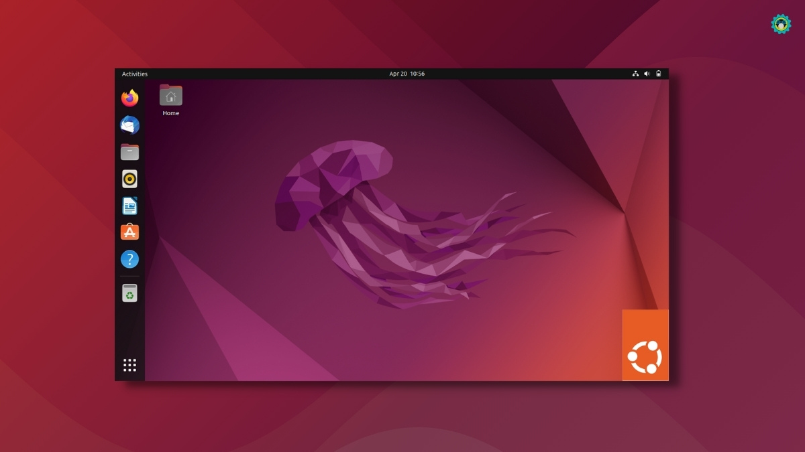

👋Привет, гость!

Linux Universe
Linux Universe — ваш портал в мир свободного программного обеспечения!
✨ Ubuntu is Amazing!

Новый релиз Ubuntu 24.10 «Oracular Oriole» является промежуточным выпуском со сроком поддержки 9 месяцев. Заявлена поддержка до июля 2025 года.
Вместе с Ubuntu объявлено о выходе официальных редакций с другими DE,
среди которых наиболее интересен релиз Kubuntu 24.10, перешедший на KDE Plasma 6 (на скриншоте).
Linux Mint
Linux Mint 22.1 — это версия с долгосрочной поддержкой, которая будет поддерживаться до 2029 года. Она поставляется с обновленным программным обеспечением и содержит усовершенствования
и множество новых функций, которые сделают работу с вашим рабочим столом более комфортной.